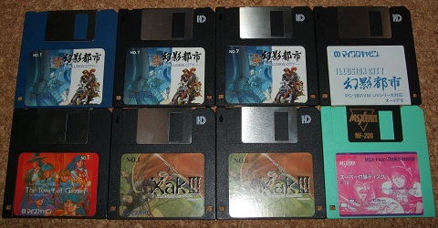
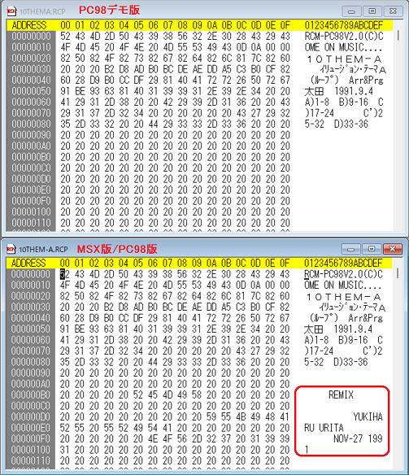
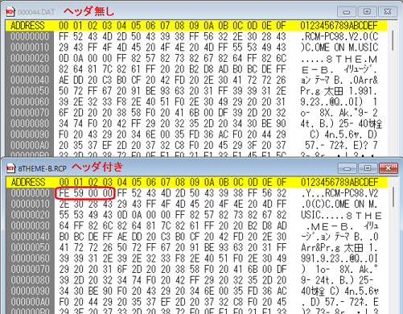

| 機種 | ソフト名 | 収録形式 | 圧縮方式 |
| MSX | 幻影都市 | ディスク#1 セクタ上 | ヘッダ付き独自圧縮 |
| PC98 | 幻影都市 | ディスク#1, 7 ファイル | ヘッダ付き/無し独自圧縮 |
| PC98 | 幻影都市デモ | ファイル | 無圧縮 |
| MSX | ガゼルの塔 | ディスク#1 セクタ上 | 無圧縮 |
| PC98 | Xak III | ディスク#1, 6 ファイル | ヘッダ付き/無し独自圧縮 |
| MSX | MSX FAN 1992年11月号 | ファイル (幻影都市 No.08, 10のみ) | LZH圧縮 |
| No. | 曲名 | コメント | MSX版ファイル名 | PC98版ファイル名 | PC98版Time Stamp | PC98デモ版ファイル名 | PC98デモ版Time Stamp | Project EGG曲名 |
| － | ILLUSION CITY IPL | － | IPROJ-00.RCP | #1 IL-IPL.RCP | 1991/11/18 18:18 | － | － | － |
| 01 | REAL PEACE | 太田 1991.10.12 | IPROJ-01.RCP | #1 000018.DAT | 1991/11/07 14:47 | － | － | Shop |
| 02 | CRISIS ARIA | 太田/木下 1991.10.31 | IPROJ-02.RCP | #1 000019.DAT | 1991/11/07 14:53 | － | － | クライシスエリア |
| 03 | INDOOR COMBAT | 太田 1991.10.31 | IPROJ03-.RCP | #1 000020.DAT | 1991/11/22 17:53 | 000087.DAT | 1991/11/07 14:54 | インドアコンバット |
| 04 | METAL ARIA | 太田 1991.9.9 | IPROJ-04.RCP | #1 000022.DAT | 1991/11/22 17:53 | － | － | METALエリア |
| 05 | BUSH WARFARE | 太田 1991.9.11 | IPROJ-05.RCP | #1 000021.DAT | 1991/11/07 14:55 | － | － | ハザードエリア |
| 06 | WATER PIPE | 太田 1991.9.17 | IPROJ-06.RCP | #1 000023.DAT | 1991/11/22 17:54 | － | － | WATERパイプ |
| 07 | 幻影城 | 太田 1991.9.20 | IPROJ-07.RCP | #1 000036.DAT | 1991/11/20 14:48 | － | － | 幻影城 |
| 08 | イリュージョン テーマB | 太田 1991.9.23 | IPROJ-08.RCP | #1 000044.DAT | 1991/11/22 17:53 | 8-THEM-B.RCP | 1991/11/07 14:58 | イリュージョンテーマB |
| #1,7 8THEM-B.RCP | 1991/12/21 22:56 | |||||||
| 09 | 謎の商人 | 太田 1991.9.26 | IPROJ-09.RCP | － | － | － | － | － |
| 10 | イリュージョン・テーマA(ループ) | 太田 1991.9.4 | IPROJ-10.RCP | #1 000043.DAT | 1991/12/06 14:43 | 10THEMA.RCP | 1991/11/07 15:00 | イリュージョンテーマA |
| REMIX YUKIHARU URITA NOV-27 1991 | #1 10THEM-A.RCP | 1991/12/03 13:57 | ||||||
| 11 | イリュージョン・テーマA(カデンツ) | 太田 1991.9.4 | IPROJ-11.RCP | #7 11THEM-A.RCP | 1991/12/21 22:56 | － | － | エンディング |
| 12 | CAVERN | 太田.田島 1991.9.21 | IPROJ-12.RCP | #1 000024.DAT | 1991/11/20 14:24 | － | － | CAVERN(迷宮) |
| 13 | 桃源酒家 PART2 VIP ROOM | 太田 1991.9.22 | IPROJ-13.RCP | #1 000032.DAT | 1991/11.07 15:02 | － | － | VIPルーム |
| 14 | HOME | 太田 1991.9.28 | IPROJ-14.RCP | #1 000028.DAT | 1991/11/07 15:03 | 000095.DAT | 1991/11/07 15:03 | HOME |
| 15 | 月の狂気 | 田島/太田 1991.10.4 | IPROJ-15.RCP | #1 000025.DAT | 1991/11/07 15:03 | － | － | 月の狂気 |
| 16 | シャオメイ | 太田 1991.10.1 | IPROJ-16.RCP | #1 000029.DAT | 1991/11/07 15:04 | 000096.DAT | 1991/11/07 15:04 | シャオメイ |
| 17 | 老師の家 | 太田 1991.10.10 | IPROJ-17.RCP | #1 000030.DAT | 1991/11/07 15:04 | 000097.DAT | 1991/11/07 15:04 | 老師の家 |
| 19 | ザコ・バトル | 木下/太田 1991.10.2 | IPROJ-19.RCP | #1 000046.DAT | 1991/12/24 0:06 | － | － | バトル |
| 20 | DANCE MACHINE | 田島/太田 1991.10.4 | IPROJ-20.RCP | #1 000031.DAT | 1991/11/07 15:06 | － | － | Dancing |
| 21 | 魔天の胎動 | 太田/木下 1991.10.2 | IPROJ-21.RCP | #1 000037.DAT | 1991/11/23 15:26 | 000104.DAT | 1991/11/07 15:06 | 胎動 |
| 22 | ネットワークイマージュ | 太田 1991.10.14 | IPROJ-22.RCP | #1 000042.DAT | 1991/11/18 16:08 | － | － | ネットワークイマージュ |
| 23 | 街 | 太田/木下 1991.10.2 | IPROJ-23.RCP | #1 000026.DAT | 1991/12/24 18:26 | － | － | 街のざわめき |
| 24 | シャオメイの危機 | 田島/太田 1991.10.17 | IPROJ-24.RCP | #1 000040.DAT | 1991/11/13 15:51 | － | － | 危機 |
| 25 | レクイエム | 太田 1991.10.18 | IPROJ-25.RCP | #1 000041.DAT | 1991/11/22 19:07 | － | － | レクイエム |
| 26 | DARKSIDE DREAM(悪夢) | 太田 1991.10.20 | IPROJ-26.RCP | #1 000027.DAT | 1991/11/13 15:52 | － | － | 悪夢 |
| 27 | 魔天教 | 木下/太田 1991.10.14 | IPROJ-27.RCP | #1 000038.DAT | 1991/11/20 15:09 | － | － | 魔天教 |
| 28 | 魔天王バトル | 田島/太田 199110.11 | IPROJ-28.RCP | #1 000061.DAT | 1991/11/13 15:53 | － | － | 魔天王バトル |
| 29 | LOVERS | 木下/太田 1991.10.14 | IPROJ-29.RCP | #1 000033.DAT | 1991/11/13 15:54 | － | － | LOVERS |
| 30 | とらわれの美紅 | 木下/太田 1991.10.14 | IPROJ-30.RCP | #1 000034.DAT | 1991/11/13 15:54 | － | － | 囚われて |
| 31 | 勝利 | 田島/太田 1991.10.11 | IPROJ-31.RCP | #1 000035.DAT | 1991/11/22 17:52 | － | － | 勝利 |
| #7 31WIN.RCP | 1991/12/21 22:56 | |||||||
| 32 | 儀式 | 田島/太田 1991.10.11 | IPROJ-32.RCP | #1 000039.DAT | 1991/11/22 19:07 | 000106.DAT | 1991/09/23 3:06 | 儀式 |
| 33 | 天を制するもの(ファイナルバトル) | 太田 1991.10.20 | IPROJ-33.RCP | #1 000062.DAT | 1991/12/01 19:39 | － | － | ファイナルバトル |
| 34 | 八部衆バトル | 太田 1991.10.27 | IPROJ-34.RCP | #1 000047.DAT | 1992/01/14 14:53 | － | － | 八部衆バトル |
| － | (CM64用音色ファイル) | － | ILLUSION.CM6 | #1 IC98.CMP | 1991/12/18 11:26 | ILLUSION.CMP | 1991/11/07 13:55 | － |


| 曲名 | コメント | MSX版ファイル名 | Project EGG曲名 |
| WARU | － | XAKG-00.RCP | オープニング1 |
| OPENING TITLES 1 | COMPOSED BY T.NITTA ARRANGED BY Y.URITA 1991.7.25 | XAKG-01.RCP | オープニング2 |
| GAZZE2 | － | XAKG-02.RCP | |
| TOWER | － | XAKG-03.RCP | － |
| 曲番号 | 曲名 | コメント | ファイル名 | Project EGG曲名 |
| M-2a | fealess town | Composed R.SASAI Arranged K.OHTA ReArrange Y.URITA | #1 M2A-.DAT | Fairless |
| M-3a | － | － | #1,6 M-3A.DAT | Main theme from XakIII |
| M-4A | Fahlands | Yukiharu Urita 1992'3'21 | #1 M-4A.DAT | The voice of Moon |
| M-4b | － | － | #1 M-4B.DAT | Silent for the insanity |
| M-4c | Assault | － | #1 M-4C.DAT | Assault on |
| M-4D | THE STEPS FROM DARK SIDE | － | #1 M-4D.DAT | Blood bath |
| M-4E | Operation base at Fahlands | － | #1 M-4E.DAT | Tensions |
| M-4F | － | － | #1 M-4F.DAT | Forgotten myth |
| M-5a | － | － | #1 M-5A.DAT | From this town |
| M-5b | － | － | #1 M-5B.DAT | Stillness of the nights |
| M-6a | － | － | #1 M-6A.DAT | Gahoo the warlock |
| M-6B | － | － | #1 M-6B.DAT | Lucifer the black |
| M-6c R | － | － | #1 M-6C.DAT | Escape from the tower |
| M-6dR | － | － | #1 M-6D.DAT | Evil eyes |
| M-6e | － | － | #1 M-6E.DAT | The entrance to the nightmare |
| M-7a | － | － | #1 M-7A.DAT | Premonitions |
| M-7b | － | － | #1 M-7B.DAT | Great wings |
| M-9b | － | － | #1 M-9B.DAT | Tera incognita |
| M-9b | － | － | #1 M-9D.DAT | Over lord |
| M-9E | － | － | #1 M-9E.DAT | Meal strome |
| M-10A | － | － | #1 M-10A.DAT | Oracle of trinity |
| M-10b | － | － | #1 M-10B.DAT | How many tears |
| M-11a | － | － | #1 M-11A.DAT | In the ultimatehule |
| M-11d | － | － | #1 M-11D.DAT | Xexis |
| M-12A | Epilogue "The Eternal Reccurence" | Composed by Y.URITA | #6 M-12A.DAT | The eternal recurrence |
| － | SILENT | Project XAK3 | #1 SILENT.DAT | － |
| － | － | － | #1 XAKIII.CMP | － |
| － | － | － | #1 XAK3.GSP | － |